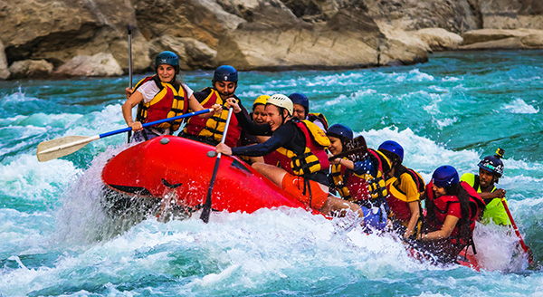
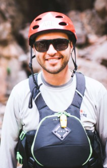
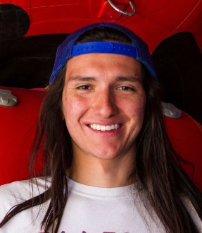
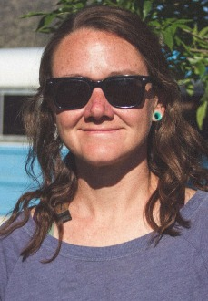

Have an Adventure
Make Memories with Rolling Rapids
Meet Our Rapids Guides
  We Are Waiting to Hear From You!
Sister A's Roaring Rapids was founded in 1998 in Northern California with 2 rafts and 2 tour guides. It started as a small family operation and has now expanded to a staff of 16 tour guides, 25 rafts and spans 5 states. With a love for the great outdoors and Mother Nature’s power, we have rapids and other nature tours 52 weeks per year. It's always rapids time, somewhere. We invite you to look at what we have to offer and take a chance on the greatest experience you will ever have... Come join us by Roaring on the Rapids with us soon.